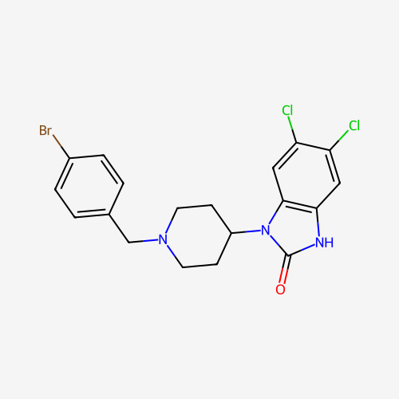

SR-15099
“SR 2.0” — Biased Mu-Opioid Receptor Agonist
Dosage & Status
There is no established human dose for SR-15099. It has never been tested in a clinical trial, and no reliable dosing, duration, or safety data exist for people. Any numbers you see quoted online come from individual reports, not from research, and they cannot be verified. Its close analogue SR 17018 has a community-reported dosing history, but the two compounds are not interchangeable and doses should not be carried over from one to the other.
This page summarizes what the published animal research shows and what is not known, and it deliberately does not give a dose chart.
Overview
SR-15099, informally called "SR 2.0," is a synthetic opioid research compound developed in the laboratory of Laura Bohn at Scripps Research, first described in the scientific literature around 2017. It is a close structural analogue of SR-17018 and of the opioid brorphine: it is identical to SR-17018 except that the chlorine atom on the benzyl ring is replaced by a bromine atom. Like SR-17018, it is described as a non-competitive, G-protein-biased partial agonist of the mu-opioid receptor, meaning it engages the receptor's G-protein signaling pathway much more strongly than the beta-arrestin pathway associated with respiratory depression, constipation, and rapid tolerance with conventional opioids. It is unscheduled and unapproved, and remains a preclinical research chemical.
Relationship to SR-17018
The two compounds are so similar that most of what is understood about SR-15099 is inferred from SR-17018 and from the small number of studies that examined both.
| SR-15099 | SR-17018 | |
|---|---|---|
| Chemical name | 5,6-dichloro-1-[1-(4-bromobenzyl)piperidin-4-yl]benzimidazol-2-one | 5,6-dichloro-1-[1-(4-chlorobenzyl)piperidin-4-yl]benzimidazol-2-one |
| Key difference | Bromine on the benzyl ring | Chlorine on the benzyl ring |
| Receptor action | Non-competitive, G-protein-biased partial agonist of the mu-opioid receptor | Non-competitive, G-protein-biased partial agonist of the mu-opioid receptor |
| Animal studies | Analgesia with minimal respiratory depression or hyperlocomotion | Analgesia with minimal respiratory depression; reduced tolerance; reverses opioid tolerance |
| Human data | None | None from clinical trials; community reports only |
SR-15099 is much less studied than SR-17018. It is reasonable to expect similar behavior given the near-identical structure, but expectation is not evidence: a single atom change can meaningfully change potency, duration, metabolism, and safety.
Mechanism
Conventional opioids such as morphine and fentanyl activate the mu-opioid receptor and recruit both G proteins (which produce pain relief) and beta-arrestin-2 (linked in animal studies to respiratory depression, constipation, and tolerance). SR-15099 and SR-17018 favor the G-protein pathway and act as partial agonists: they produce a submaximal signal even at full receptor occupancy. Research from the Bohn lab, including a 2021 study in PNAS, found that this class of biased agonists produce sustained G-protein activation and behave as non-competitive agonists — meaning they do not simply compete with other opioids for the same binding site in the way a standard agonist or antagonist would.
Research
In mice, SR-15099 produces robust analgesia with minimal respiratory depression and minimal hyperlocomotion. A 2023 preprint on locomotor activity found that both SR-17018 and SR-15099 caused only submaximal hyperactivity in mice, in contrast to morphine, fentanyl, and oliceridine, which were fully efficacious. All of this is animal work: rodent findings often do not translate to people, and no human studies exist. Whether SR-15099 shares SR-17018's reported ability to reduce opioid tolerance and ease withdrawal in humans has not been tested.
Effects
No human effect profile has been established. In animals, the reported profile is analgesia with little respiratory depression and little hyperactivity. This should not be read as a description of what a person would experience.
- Analgesia
- Sub-maximal locomotor activation
- Minimal respiratory depression
- Onset and duration
- Effective and toxic doses
- Withdrawal or tolerance effects
- Long-term safety
- Interactions with other drugs
Legal Status
SR-15099 is a research compound: not approved for human use and, at the time of writing, not scheduled under the US Controlled Substances Act. It is legal to purchase for research but not for human consumption. Close opioid analogues such as brorphine have been placed in Schedule I in the US, and the status of newer opioids can change, so know your local laws.
Harm Reduction
This is an untested opioid. Because no human safety data exist, treat every dose as an experiment with unknown risk. The absence of reported respiratory depression in mice does not mean it cannot cause it in people.
- Verify your product. Research chemicals are frequently mislabeled or contaminated, and a compound sold as SR-15099 may be something else — including a far more potent opioid. Use fentanyl test strips and, where available, drug-checking services.
- Do not mix it with other opioids, benzodiazepines, alcohol, or other depressants, which multiply the risk of dangerously slowed breathing.
- Lowered tolerance may mean higher overdose risk. If SR-17018 lowers opioid tolerance in people as community reports suggest, a return to a former dose of a full opioid could be fatal. Treat yourself as opioid-naive after any break, and keep naloxone (Narcan) on hand.
- Do not use it alone while its effects are unknown, and have someone who can call for help.
- Talk to a clinician if you are trying to stop opioids. Approved treatments such as buprenorphine and methadone have decades of safety and effectiveness data that SR-15099 lacks.
If you or someone else may be overdosing, call emergency services and give naloxone if available. In the US, the Never Use Alone hotline is 800-484-3731, and SAMHSA's helpline is 1-800-662-4357.
Further Reading
SR-15099's closest relative is far better documented, including community dosing reports and the taper protocol.
SR 17018 →This page is for educational purposes only. Nothing here constitutes legal, medical, or therapeutic advice. Know your local laws.